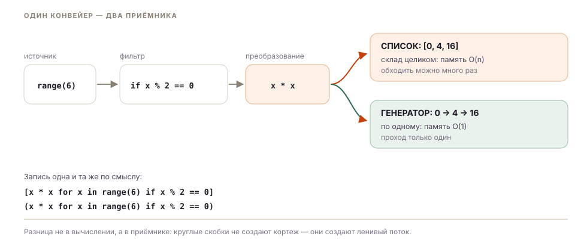

Comprehensions и генераторы: конвейер против склада Одна и та же обработка данных — но разный приёмник результата
Comprehension — это конвейер с ящиком на выходе: всё готовое сразу складывается в список. Генератор — тот же конвейер без склада: деталь приходит по требованию, память не растёт, но пройти конвейер можно только один раз.
01Зачем это backend-разработчику
Почти любая обработка данных — это фильтр плюс преобразование. Comprehension записывает её одной строкой, а генератор позволяет делать то же самое, не загружая в память миллион объектов.
- Читаемость.
[f(x) for x in items if cond(x)]читается сверху вниз, как SQL: что взять, откуда, при каком условии. Цикл сappend— это три строки и лишняя переменная. - Память. Список из миллиона чисел занимает 8,4 МБ, генератор — 200 байт. На больших выгрузках это разница между «работает» и «упало по памяти».
- Ленивость. Первый элемент генератора появляется за микросекунды, а
any()/all()останавливаются на первом ответе, не проходя весь диапазон. - Собеседование: «чем генератор отличается от списка», «что такое ленивость», «почему генератор одноразовый» — проверяют понимание модели вычислений.
[x * x for x in items if x % 2 == 0] — это SELECT x * x FROM items WHERE x % 2 = 0,
только в Python. Одна привычка мышления — два синтаксиса.
02Ассоциация-якорь: конвейер и склад
Comprehension — это завод со складом. Детали проходят по конвейеру, и каждая готовая сразу складывается в ящик. Когда конвейер остановился, склад полон: можно брать детали сколько угодно раз.
Генератор — тот же конвейер без склада. Деталь выдаётся, когда её просят, и никуда не складируется. Память не растёт, но конвейер одноразовый: второй раз пройти его нельзя — он уже отработал.
Метафора объясняет выбор. Нужно обойти данные дважды, отсортировать или узнать длину — нужен склад, то есть список. Нужно прочитать большой файл, просуммировать, найти первый подходящий — хватит конвейера: склад только мешает.
03Ассоциативный ряд: восемь звеньев
- for-циклбазовая форма: взять, проверить, положить
- comprehensionта же форма одной строкой
- ifфильтр внутри выражения
- вложенные циклыпорядок как в for: слева направо
- dict / set compдругой приёмник — другой тип
- ленивостьвычисление по требованию
- генераторпоток без склада, память O(1)
- исчерпаниепроход только один
Обратите внимание: первые пять звеньев — про запись, последние три — про то, когда и сколько раз вычисляется результат. Именно это и спрашивают на собеседовании.
04Схема: один конвейер, два приёмника

Отсюда практическое правило: сначала сформулируйте конвейер — «откуда, при каком условии, что получить», и только потом решайте, нужен склад или поток. Синтаксис отличается одной скобкой.
05Как это устроено на самом деле
Comprehension — это не «магия», а тот же цикл, скомпилированный в байткод: создать контейнер, пройти итератор, проверить условие, добавить результат. Разница с ручным циклом — в компактности и в том, что переменная цикла не утекает наружу.
| Запись | Что создаёт | Когда вычисляет |
|---|---|---|
| [f(x) for x in it] | список | сразу, целиком |
| {f(x) for x in it} | множество | сразу, целиком |
| {k: v for x in it} | словарь | сразу, целиком |
| (f(x) for x in it) | генератор | по требованию, по одному |
Что значит «лениво»
Генераторное выражение не выполняет ни одной итерации, пока его не начнут обходить: next(),
for, sum(), any(). Каждый запрос
прокручивает конвейер до следующего подходящего элемента и останавливается. Когда элементы кончились,
поднимается StopIteration — и генератор больше ничего не отдаст.
Почему генератор одноразовый
Генератор — это итератор, который помнит своё место в конвейере. Второй проход невозможен: источник уже исчерпан. Если нужно обойти дважды — либо материализуйте в список, либо создайте новый генератор.
Когда что выбирать
- Список — если результат нужен несколько раз, нужен
len(), сортировка или индексация. - Генератор — если данных много, нужен один проход или ранний выход (
any,next, чтение файла). - Обычный цикл — если внутри несколько действий, сложные условия или побочные эффекты: читаемость важнее компактности.
06Лаборатория: запустить и увидеть
Фрагменты файла snippets/05_comprehensions_lab.py.
Время и адреса объектов у вас будут другими, порядок величин — тот же.
Шаг 1. Три записи одной идеи
plain = []
for x in range(6):
if x % 2 == 0:
plain.append(x * x)
comp = [x * x for x in range(6) if x % 2 == 0]
gen = (x * x for x in range(6) if x % 2 == 0)
print(plain, comp, list(gen))
Шаг 2. Память: склад против конвейера
import sys n = 1_000_000 lst = [x * x for x in range(n)] gen = (x * x for x in range(n)) print(sys.getsizeof(lst), sys.getsizeof(gen))
8,4 МБ против 200 байт. Генератор не хранит результаты — он хранит только текущее состояние конвейера.
Шаг 3. Один проход
g = (x * x for x in range(5)) print(sum(g)) print(sum(g))
Второй вызов ничего не считает: генератор уже исчерпан. Это самая частая ошибка при отладке — «почему сумма нулевая?» — потому что генератор уже прошли однажды.
Шаг 4. Время до первого элемента
n = 1_000_000 first_from_list = [x * x for x in range(n)][0] # построить всё first_from_gen = next(x * x for x in range(n)) # только первый
Шаг 5. Ленивость останавливает работу
big = range(10_000_000) any(x > 5 for x in big) # True на седьмом элементе all(x < 5 for x in big) # False на шестом
Десять миллионов элементов не были пройдены: проверка остановилась на первом ответе. Это и есть короткое замыкание — главная выгода от ленивости в реальном коде.
Шаг 6. Ловушка замыкания
funcs = [lambda: i for i in range(3)] print([f() for f in funcs]) # [2, 2, 2] funcs_fixed = [lambda i=i: i for i in range(3)] print([f() for f in funcs_fixed]) # [0, 1, 2]
Лямбда захватывает переменную, а не значение. К моменту вызова цикл закончился, и i равно 2.
Значение по умолчанию i=i фиксирует его в момент создания функции.
07Мост: где ленивость живёт в pandas, SQL и NumPy
pandas: векторизация вместо циклов
import pandas as pd
df = pd.DataFrame({"amount": [1200, 800, 2100]})
df["amount"].map(lambda x: x * 1.1) # comprehension-подобно, но медленно
df["amount"] * 1.1 # векторизованно: быстрее
df[df["amount"] > 1000] # фильтр — это `if` из comprehension
[x * 1.1 for x in df["amount"]] # список Python, не Series
Comprehension и map с лямбдой — это построчный Python, а df["amount"] * 1.1 —
одна векторная операция. Для больших таблиц разница в десятки раз; глава 12 объяснит, почему.
SQL: SELECT — это comprehension
SELECT amount * 1.1 -- преобразование FROM orders WHERE amount > 1000; -- фильтр -- курсор базы — это генератор: строки приходят порциями -- и не загружаются все сразу
SELECT + FROM + WHERE — ровно
«выражение, источник, условие» из comprehension. А серверный курсор ведёт себя как генератор:
fetchmany() отдаёт следующую порцию, не материализуя всю таблицу.
Файлы и пагинация: генератор по природе
with open("big.csv") as f:
total = sum(int(line) for line in f) # файл не читается целиком
def pages(start=0, size=100):
while True:
chunk = fetch(start, size) # одна страница за раз
if not chunk:
return
yield chunk
start += size
Это те же два приёма, что в главе 08 курса: читать потоково и отдавать порциями. Для выгрузок и отчётов это разница между стабильной работой и OOM.
08Шесть ошибок, на которых спотыкаются
Один и тот же генератор обошли дважды — второй результат пустой. sum(g), потом sum(g) → 0.
len(g) → TypeError: object of type 'generator' has no len(). Длина заранее неизвестна.
sum(1 for _ in g), но это исчерпает генератор; если длина нужна — список.[print(x) for x in items] создаёт список None и путает читателя: comprehension — про построение значения.
for; для результата — comprehension.[[y for y in row] for row in matrix if ...] — читается, а четыре уровня уже нет.
Все функции захватят последнее значение переменной: [lambda: i for i in range(3)] → [2, 2, 2].
lambda i=i: i.(x for x in it) — генератор, а не кортеж. Кортеж — tuple(...), и он сразу материализует всё.
() с выражением внутри — ленивый поток; один элемент — (x,).09Вопросы с собеседования
Чем генератор отличается от списка?
Список хранит все элементы в памяти и позволяет обходить их много раз. Генератор хранит только состояние конвейера, выдаёт элементы по одному и проходится один раз. Для миллиона чисел — 8,4 МБ против 200 байт.
Что такое ленивые вычисления?
Значение вычисляется только тогда, когда его запросили. Генератор не выполняет ни одной итерации, пока его не начнут обходить, а any()/all() останавливаются на первом ответе.
Почему генератор одноразовый?
Он итератор и помнит позицию в конвейере. Пройдя до конца, он поднимает StopIteration и больше ничего не отдаёт — источника уже нет.
Чем генераторное выражение отличается от генераторной функции?
Выражение записывается в одну строку: (x * x for x in it). Функция использует yield и умеет несколько шагов, ветвления и бесконечные циклы. Обе возвращают генератор.
Когда comprehension хуже обычного цикла?
Когда внутри несколько действий, сложные условия, побочные эффекты или вложенные структуры. Тогда однострочник начинает требовать расшифровки.
Как посчитать количество элементов генератора?
sum(1 for _ in gen) — но это исчерпает генератор, и повторно его не обойти. Если длина нужна заранее, генератор — неподходящая структура.
Что такое короткое замыкание в any и all?
any() останавливается на первом истинном значении, all() — на первом ложном. Поэтому на генераторе они не проходят весь диапазон, если ответ уже известен.
Как comprehension связан с SQL SELECT?
[f(x) for x in src if cond(x)] — это SELECT f(x) FROM src WHERE cond(x). Та же модель: источник, фильтр, преобразование, приёмник. В pandas приёмник — DataFrame, в SQL — результат запроса.
10Три задачи: сначала своя попытка
01 Развернуть матрицу
Из списка списков получите плоский список одной строкой.
matrix = [[1, 2], [3, 4], [5, 6]] # ожидается: [1, 2, 3, 4, 5, 6]
Показать решение и разбор
flat = [x for row in matrix for x in row] print(flat) # [1, 2, 3, 4, 5, 6]
Что важно. Порядок циклов — как в обычном for: внешний слева, внутренний справа. Если поменять местами, получится тот же результат для квадратной матрицы, но не для прямоугольной — классическая ошибка.
02 Сумма из потока
Строки «файла» — список строк с числами. Просуммируйте числа, не создавая список всех чисел.
lines = ["10", "20", "", "30"] # пустая строка — как пустая строка в файле
Показать решение и разбор
total = sum(int(line) for line in lines if line.strip()) print(total) # 60
Что важно. Список чисел не создаётся: sum забирает значения
из генератора по одному. Именно так читают большие файлы: sum(int(line) for line in f).
А if line.strip() отбрасывает пустые строки до преобразования.
03 Первый подходящий заказ
Найдите первый заказ дороже 1000. Если такого нет — верните None.
Сделайте это лениво и объясните, почему это лучше списка.
orders = [
{"id": 1, "amount": 800},
{"id": 2, "amount": 2100},
{"id": 3, "amount": 1200},
]
Показать решение и разбор
first = next((o for o in orders if o["amount"] > 1000), None)
print(first) # {'id': 2, 'amount': 2100}
Что важно. next останавливается на первом совпадении и не
доходит до конца. Список через comprehension построил бы все совпадения, даже если нужно одно.
Второй аргумент None защищает от StopIteration.